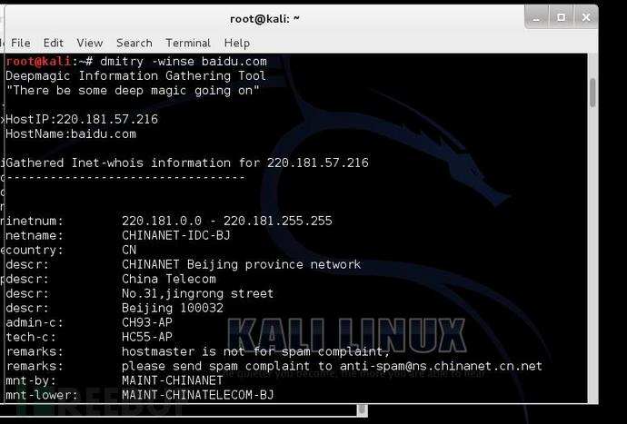
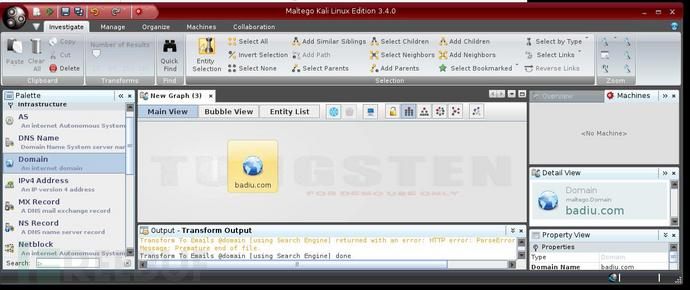
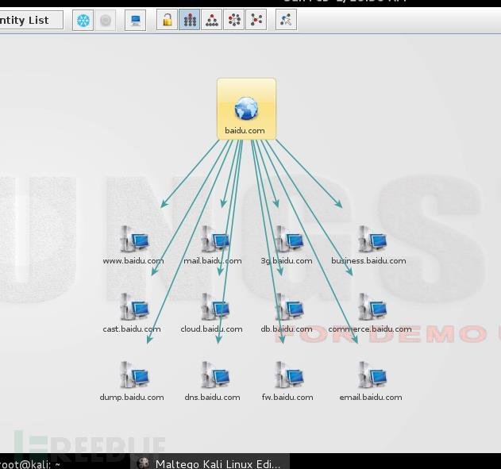

扫描工具的使用
域名扫描dnsenum
我们可以利用dnsenum从DNS服务器上获取以下信息：
- 1. 主机IP地址
- 2. 该域名的DNS服务器
- 3. 该域名的MX记录
除了被用来获取DNS信息，dnsenum还具有以下特点：
- 1. 使用谷歌浏览器获取子域名
- 2. 暴力破解
- 3. C级网络扫描
- 4. 反向查找网络
使用：
# dnsnum baidu.com

fierce 使用：
fierce是使用多种技术来扫描目标主机IP地址和主机名的一个DNS服务器枚举工具。运用递归的方式来工作。它的工作原理是先通过查询本地DNS服务器来查找目标DNS服务器，然后使用目标DNS服务器来查找子域名。fierce的主要特点就是可以用来地位独立IP空间对应域名和主机名。
通过一个例子来演示：
#fierce -dns baidu.com -threads 3

DMitry
DMitry（Deepmagic Information Gathering Tool）是一个一体化的信息收集工具。它可以用来收集以下信息：
- 1. 端口扫描
- 2. whois主机IP和域名信息
- 3. 从Netcraft.com获取主机信息
- 4. 子域名
- 5. 域名中包含的邮件地址
尽管这些信息可以在Kali中通过多种工具获取，但是使用DMitry可以将收集的信息保存在一个文件中，方便查看。
使用DMitry可以使用如下命令：
这个演示是要获取 whois ，ip，主机信息，子域名，电子邮件。
#dmitry -winse baidu.com
再一个例子，通过dmitry 来扫描网站端口
#dmitry -p baidu.com -f -b
Maltego
Maltego是一个开源的取证工具。它可以挖掘和收集信息。 Maltego是一个图形界面。 Maltego的基础网络特点：
- 1. 域名
- 2. DNS
- 3. Whois
- 4. IP地址
- 5. 网络块
也可以被用于收集相关人员的信息：
- 1. 公司、组织
- 2. 电子邮件
- 3. 社交网络关系
- 4. 电话号码
通过一个例子演示： 使用快捷键ctrl+T来创建新的项目。然后到Palette选项卡，选择基础设施（Infrastructure），选择域（Domain），如果成功建立会出现paterva.com。可以通过双击paterva.com这个图标进行更改
 利用搜索引擎
theharvester theharvester是一个电子邮件，用户名和主机名/子域名信息收集工具。它收集来自各种公开的信息来源。最新版本支持的信息来源包括：
- 1. Google
- 2. Google profiles
- 3. Bing
- 4. PGP
- 5. LinkedIn
- 6. Yandex
- 7. People123
- 8. Jigsaw
例： #theharvester -d baidu.com -l 100 -b bing
#theharvester -d baidu.com -l 100 -b linkedin
Metagoofil
Metagoofil是一款利用Google收集信息的工具，目前支持的类型如下：
- 1. word
- 2. ppt
- 3. Excel
- 4. PDF
例： #metagoofil -d baidu.com -l 20 -t doc,pdf -n 5 -f test.html -o test